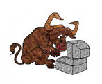

Tecnologia da Informação

A Tecnologia da Informação (ou, em inglês, Information Technology — IT) pode ser definida como o conjunto de todas as atividades e soluções providas por recursos
computacionais que visam permitir a obtenção, o armazenamento, a proteção, o processamento, o acesso, o gerenciamento e o uso das informações.
Esse conjunto de soluções é composto, essencialmente, por uma combinação de equipamentos (hardware) e software:
Hardware: PCs, notebooks, servidores, tablets, smartphones, equipamentos de redes (como roteadores e switches), impressoras, leitores de códigos de barra, entre outros;
Software: sistemas operacionais, aplicativos (programas), protocolos de comunicação, antivírus, soluções de ERP, certificados digitais, tecnologias como blockchain e por aí vai.
Por que a Tecnologia da Informação é importante?

Se a informação é um patrimônio, um bem que agrega valor e dá sentido às mais diversas atividades, é importante garantir que os recursos de hardware e software
sejam aplicados e mantidos de modo condizente à cada atividade. É por isso que empresas e outras organizações costumam contar com um departamento de TI (ou uma divisão similar).
Esse departamento de TI pode trabalhar por conta própria, ser terceirizado — quando os serviços de Tecnologia da Informação são prestados por profissionais ou empresas externas — ou, ainda, corresponder a uma combinação de ambos.
O que importa é que as decisões relacionadas à TI sejam tomadas e executadas de modo a garantir que as atividades que dependem delas obtenham os recursos e resultados necessários.
Uma rede de supermercados, por exemplo, precisa garantir que o seu sistema de vendas estará em funcionando durante toda a operação comercial, do contrário, o prejuízo será grande; do mesmo modo, um hotel precisa ter um sistema bem desenvolvido para evitar reservas de quartos para dois clientes ao mesmo tempo.
Além de levar em conta aspectos como desempenho (é indesejável que a aplicação fique lenta ou instável), disponibilidade (o sistema não pode ficar inoperante quando em uso) e segurança (para evitar roubo de dados, por exemplo), o departamento de TI precisa tomar decisões bem ponderadas para evitar desperdício de recursos ou gastos inesperados.